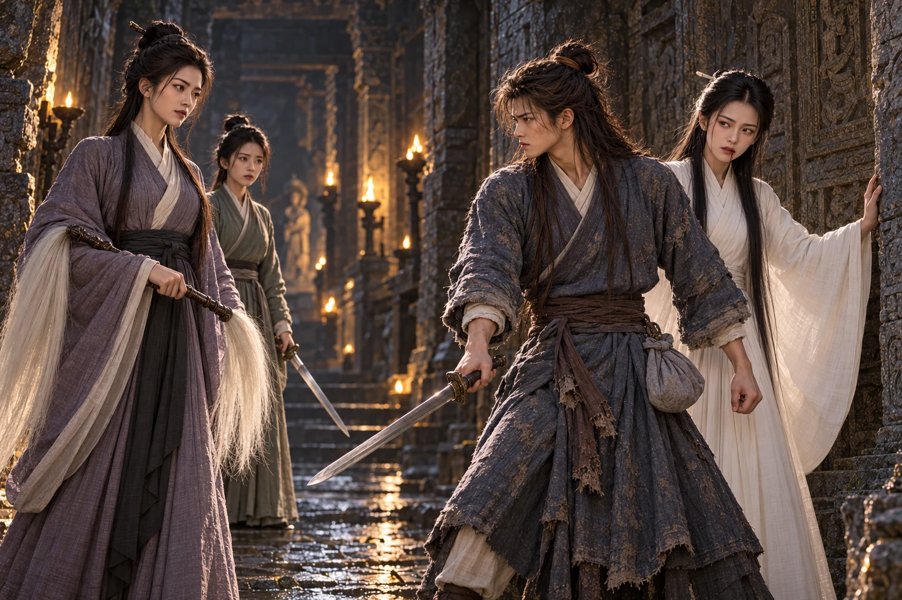
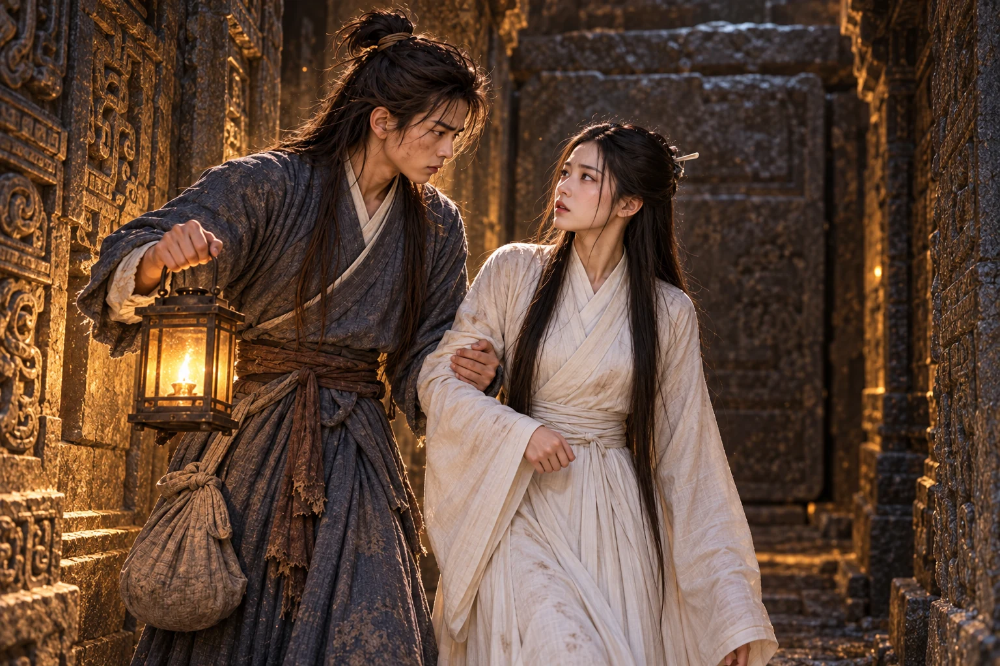

Tanah masih melekat di kuku ketika menyerahkan pedang kayu kepadanya.
Mereka baru kembali dari memakamkan . Dani meletakkan buntalan di dekat dinding, tetapi tidak mengambil pedang itu. Di ruangan tempat perempuan tua tersebut dibaringkan semalam, kain penutupnya sudah dilipat. Lampu yang dinyalakan Xiaolongnü membuat ruangan itu tampak seperti biasa.
“Apakah kita harus mulai berlatih sekarang, Gugu?” tanya Dani.
“Menunggu esok belum tentu membuat lukamu lebih ringan. Kita dapat memulainya dengan gerakan yang tidak memberatkanmu,” jawab Xiaolongnü.
“Bukan luka di tubuh yang kumaksud, Gugu. Kita baru saja memakamkan Nenek Sun,” kata Dani.
Xiaolongnü menurunkan pedang. Untuk sesaat Dani menyangka ia akan dimarahi. Gadis itu justru memandang kain terlipat di sebelah lampu.
“Aku pun belum terbiasa mendapati tempat Sun Popo kosong. Tetapi aku sudah berjanji akan menjagamu, dan aku hendak mulai menepatinya,” kata Xiaolongnü.
Mendengar pengakuan itu, Dani akhirnya mengambil pedang, menggenggam gagangnya terlalu keras. Xiaolongnü tidak menyuruhnya berhenti bersedih. Ia menunjukkan tempat berdiri, lalu meminta Dani mengangkat tangan.
Pukulan pertama Dani meleset. Yang kedua ditahan begitu mudah hingga rasa malu naik ke tengkuknya. Ia maju lebih cepat; ujung pedang Xiaolongnü sudah menyentuh dadanya sebelum tangannya sempat turun.
“Engkau terlalu sibuk mengejar tanganku,” kata gadis itu. “Perhatikan perpindahan kakiku. Dari sanalah engkau dapat mengetahui ke mana tubuhku akan bergerak.”
Dani merendahkan bahu, mengambil ancang-ancang yang masih diingat tubuhnya. Xiaolongnü mengetuk pergelangan tangannya sebelum tenaga sempat terkumpul.
“Jangan gunakan gerakan itu dahulu, Dani,” kata Xiaolongnü.
“Tetapi hanya gerakan inilah yang dapat kupakai ketika terdesak, Gugu,” jawab Dani.
“Justru karena engkau belum dapat menghentikan tenaganya, engkau belum boleh bergantung kepadanya. Pelajari dulu cara menguasai tubuhmu sendiri,” kata Xiaolongnü.
Ia hendak membantah, tetapi teringat rusuk dan . meluruskan tubuh dengan muka panas. Selama ini ilmu ayah angkatnya adalah satu-satunya jawaban ketika ia terpojok. Melepaskannya terasa seperti menyerahkan tangan agar diikat.
mengulangi gerakannya, kali ini perlahan. Dani melihat tumitnya bergeser lebih dahulu, baru pinggang dan tangan. Ia mencoba meniru. Pedang kayunya tetap terlepas.
“Izinkan murid mencobanya sekali lagi, Gugu,” kata Dani, sebelum disuruh.
Pada percobaan berikutnya ia berhasil menjaga gagang itu. Xiaolongnü mengangguk kecil. Tidak ada orang di belakangnya yang tertawa, dan tidak ada hukuman karena ia memerlukan penjelasan dua kali.
Malam itu Dani kembali mengambil buntalannya dari dekat pintu. Ia membawanya lebih jauh ke dalam, ke kamar yang ditunjukkan Xiaolongnü.
Musim berganti di luar Makam Kuno. Di dalam, pelajaran bergerak dari langkah dan napas menuju rangkaian pedang, lalu dasar . Latihan yang semula menghabiskan seluruh pagi akhirnya dapat diselesaikan Dani sebelum minyak lampu berkurang separuh.
Namun ada hal yang tidak menjadi lebih mudah hanya karena ia cepat belajar.
Pada tahun pertama, Xiaolongnü mendapati Dani menyembunyikan pergelangan yang bengkak di balik lengan bajunya. Ia telah mengulang satu gerakan sendirian sampai malam karena kesal terus dikalahkan.
“Ulurkan tanganmu, Dani. Aku hendak melihat pergelangan yang kausembunyikan itu,” kata Xiaolongnü.
“Pergelangan ini sudah tidak terlalu sakit, Gugu. Aku masih dapat menggerakkannya,” jawab Dani.
Xiaolongnü menyentuhnya. Dani meringis.
“Engkau meringis ketika kusentuh. Mengatakan bahwa lukamu sembuh tidak membuatnya sungguh-sungguh sembuh,” kata Xiaolongnü.
Ia menunduk saat gadis itu membebat pergelangannya. “Kalau setiap kali sakit aku harus berhenti, kapan aku dapat menyusul kepandaian Gugu?”
“Engkau baru dapat maju setelah tanganmu pulih. Luka yang dipaksakan hanya akan menahanmu lebih lama,” jawab Xiaolongnü.
“Aku mengerti, Gugu. Tetapi rasanya aku selalu tertinggal meskipun sudah berlatih lebih lama,” kata .
mengencangkan simpul, lalu menaruh pedang Dani di luar jangkauannya. “Besok kita melatih langkah kaki. Biarkan pergelangan ini beristirahat dahulu.”
Dani menatap pedang itu. “Jadi Gugu tidak menyuruhku berhenti belajar sama sekali?”
“Kakimu tidak terluka. Masih banyak yang dapat kaulatih bersamaku tanpa memakai tangan itu,” jawab Xiaolongnü.
Sesudah kejadian itu ia masih beberapa kali berlatih terlalu keras. Akan tetapi, ia mulai datang sendiri ketika memerlukan obat. Xiaolongnü pun belajar membedakan diam Dani yang sedang memperhatikan dari diamnya ketika menyembunyikan sesuatu.
Empat tahun berlalu. Dani berusia delapan belas, Xiaolongnü dua puluh. Pundaknya telah melebar; jubah biru kelabu yang dibawa dari keluarga Guo sudah lama tidak muat, diganti dengan pakaian sederhana berwarna serupa. Buntalan tua tetap disimpannya, bersama alat jahit .
Dalam latihan pedang, Dani kini dapat memaksa Xiaolongnü berpindah dari tempatnya. Ia belum mampu mengalahkannya. Setiap kali mengira sudah menemukan celah, ujung pedang gurunya tiba di sana lebih dahulu.
Sore itu mereka berlatih di ruang batu dekat celah udara. Dani mengubah arah tebasan pada saat terakhir, mencoba mengambil sisi yang baru ditinggalkan Xiaolongnü. Gadis itu berputar, lengan putihnya menyapu pandangan. Pedang Dani berhenti sejari dari dinding, sedangkan pedang Xiaolongnü menyentuh bahunya.
“Engkau mengubah arah terlalu cepat, Dani,” kata Xiaolongnü.
“Jika aku menunggu lebih lama pun pedang Gugu tetap tiba lebih dahulu. Bagian mana yang belum kulihat?” jawab Dani.
“Engkau bergerak sebelum memastikan pijakanku. Kecepatanmu sendiri membuatmu melewatkan celah yang sesungguhnya,” kata Xiaolongnü.
Dani menurunkan pedang. Dahulu ia akan segera meminta ulang. Sekarang ia memperhatikan bekas kakinya pada debu, lalu bergeser ke posisi yang tadi seharusnya dipilih.
“Seharusnya kakiku bergeser ke tempat ini, Gugu?” tanya Dani.
Xiaolongnü mengangguk.
Ia tersenyum, pendek, lebih senang karena menemukan kesalahan daripada karena pujian. Saat mengangkat wajah, ia mendapati Xiaolongnü masih memandangnya.
“Mengapa memandangku begitu? Apakah masih ada yang keliru?” tanya .
“Aku sedang mengingat tinggi badanmu ketika pertama datang. Dulu engkau harus mendongak untuk menatapku,” jawab Xiaolongnü.
Dani melirik puncak kepalanya, lalu menahan komentar yang hampir keluar. Xiaolongnü mengangkat alis tipis.
“Katakan saja apa yang sedang kaupikirkan, Dani,” kata Xiaolongnü.
“Aku khawatir Gugu akan menambah latihan kalau kukatakan bahwa sekarang aku yang harus menunduk,” jawab Dani.
“Kalau tenagamu masih cukup, latihan memang dapat ditambah. Tetapi bertambah tinggi bukan kesalahan yang perlu kuhukum,” kata Xiaolongnü.
Dani tertawa kecil. Kali ini Xiaolongnü tahu ia sedang bercanda, meskipun tidak tahu bagian mana yang seharusnya lucu.
Beberapa bulan kemudian mereka memasuki latihan lanjutan . Pelajaran itu menuntut keduanya menjaga irama tenaga dengan cermat; kepandaian menghafal tidak dapat menggantikan kesabaran. Xiaolongnü menjelaskan bagian sulit sebelum mereka mulai, dan meminta Dani memberi tahu apabila dadanya terasa sesak.
Pada putaran terakhir Dani merasakan panas menjalar terlalu cepat. Ia mencoba menahannya sendiri, terlambat menyadari bahwa perubahan itu mengganggu irama mereka. Xiaolongnü menarik napas tajam. Ketika Dani membuka mata, darah sudah menyentuh sudut bibirnya.
“Gugu!”
Ia hampir meraih bahunya.
“Jangan sentuh tubuhku dahulu. Tunggu sampai aliran tenaganya tenang,” perintah Xiaolongnü.
Dani membeku. Xiaolongnü memejamkan mata kembali, kedua tangannya gemetar di atas lutut. Dani menghitung bunyi tetesan air di ruangan itu agar tidak terus memanggil. Baru setelah bahunya mengendur ia berani bergerak.
“Seharusnya aku segera memberitahu Gugu ketika dadaku mulai panas,” kata Dani.
membuka mata. “Benar, . Aku sudah memintamu mengatakannya sebelum rasa sesak bertambah.”
Jawaban itu lebih menyakitkan daripada teguran panjang. Dani mengambil kain dan air, lalu berlutut di dekatnya.
“Kupikir tenagaku masih cukup untuk menahannya, Gugu. Aku tidak ingin menghentikan latihan kita,” jawab Dani.
“Tadi tubuhmu telah menunjukkan bahwa engkau belum sanggup. Lain kali dengarkan keadaanmu sendiri, bukan keinginanmu untuk cepat selesai,” kata Xiaolongnü.
Ia mengangguk, rahangnya mengeras. Xiaolongnü menerima kain yang disodorkannya. Ketika hendak berdiri, lututnya kehilangan tenaga; Dani menahan lengannya tanpa menunggu perintah lagi.
“Aku masih dapat berjalan ke ruang sebelah,” kata Xiaolongnü.
“Bersandarlah kepadaku dahulu, Gugu. Kali ini biarkan aku yang menopangmu,” jawab Dani.
Kali ini Xiaolongnü menurut. Untuk pertama kali sejak tinggal di makam, Dani merasakan berat tubuh gurunya benar-benar bertumpu kepadanya. Ia mengantarnya ke ruang istirahat dan menaruh pedang dalam jangkauan tangan Xiaolongnü.
Menjelang malam keadaan gadis itu belum pulih. Dani baru hendak mengganti minyak lampu ketika tiga ketukan terdengar dari lorong depan.
Xiaolongnü mengangkat wajah.
“Buka pintunya, Shimei,” terdengar suara perempuan. Lembut, hampir ramah. “Sudah lama sekali kau membiarkan kakakmu menunggu.”
Dani mengenali suara itu sebelum melihat wajahnya. Bau kayu terbakar dari kediaman Lu seakan kembali memenuhi ruangan. Ia menyambar buntalan kecil dari dekat tempat tidurnya, mengikatkannya di pinggang, lalu mengambil pedang.
masuk dengan putih tersampir pada lengan. Di belakangnya berjalan seorang perempuan muda berjubah hijau kelabu, membawa pedang bersarung. Pandangan murid itu cepat berpindah dari lorong ke tangan gurunya.
“, tetaplah dekat denganku,” kata Li Mochou, tanpa menoleh. “Jangan tertinggal di lorong yang belum kaukenal.”
“Murid akan mengikuti Shifu,” jawab Hong Lingbo.
berdiri di muka ruang istirahat. Li Mochou memandang wajahnya lebih lama daripada pintu yang dihalanginya, kemudian tersenyum.
“Rupanya anak yang dahulu kembali ke kediaman Lu. Bertahun-tahun berlalu, engkau masih juga berdiri menghalangi jalanku,” ujar Li Mochou.
“Di mana sekarang?” tanya Dani.
“Bertemu seorang tetua, bahkan kabarnya pun tidak kautanyakan. Begitukah adik seperguruanku mengajarkan tata krama?” jawab Li Mochou.
“Saya menanyakan gadis yang dahulu Bibi bawa dalam keadaan patah kaki. Di mana dia?” kata Dani.
Senyum itu tidak berubah. “Ia hidup. Adapun tempatnya, anak muda, bukan urusanmu malam ini.”
Dani maju setengah langkah. Dari belakang, memanggil namanya. Ia berhenti; cengkeramannya pada pedang mengendur sedikit.
Li Mochou melihat kain bernoda di tangan adik seperguruannya.
“Wajahmu pucat sekali, Shimei. Rupanya aku datang ketika engkau sedang membutuhkan bantuan,” ujar Li Mochou.
“Kalau Shijie hendak membantuku, tinggalkan makam ini dahulu. Aku perlu beristirahat,” ujar Xiaolongnü.
“Tentu, setelah engkau memperlihatkan pelajaran yang ditinggalkan Guru. Kakakmu tidak akan merepotkanmu lebih lama,” jawab Li Mochou.
“Pelajaran itu tidak akan kuserahkan kepadamu, Shijie,” kata Xiaolongnü.
menghela napas, seolah menghadapi anak keras kepala. “Kau memilih mengajarkannya kepada orang luar. Kakak seperguruanmu sendiri bahkan tidak boleh melihat?”
“Dani adalah muridku. Aku bertanggung jawab mengajarinya, sebagaimana Guru dahulu mengajari kita,” jawab Xiaolongnü.
“Sungguh besar rasa tanggung jawabmu.” Matanya singgah pada , kemudian kembali kepada Xiaolongnü. “Sampai terluka pun engkau masih melindungi murid yang satu ini.”
Dani merasakan ujung telinganya panas, tetapi kali ini ia tidak terpancing menjawab. Li Mochou telah menggeser kaki; di lengannya mulai terurai.
“Lingbo, ambillah pedang anak muda itu. Jangan terburu-buru; tampaknya ia sudah terbiasa berlindung di belakang gurunya,” perintah Li Mochou.
mencabut pedang. Dani menangkis serangan pertamanya ke samping dan memotong jarak, memaksanya mundur sebelum sempat menyerang lagi. Gerak gadis itu terlatih, tetapi setiap kali Li Mochou bergeser, matanya ikut mencari gurunya.
Dani menggunakan keraguan itu. Ia menekan pedang Hong Lingbo ke dinding, lalu memutar gagang senjatanya. Gadis tersebut tersentak; sebelum pegangannya terlepas, kebut putih menyambar pergelangan Dani.
Ia menarik tangan tepat waktu. Serat-serat kebut menghantam batu di sebelah pipinya. Li Mochou sudah berada di antara mereka.
“Empat tahun memang cukup untuk membuat seorang bocah berani mengangkat pedang,” kata Li Mochou pelan. “Tetapi siapa yang memberitahumu bahwa itu cukup untuk menandingiku?”
Dani belum sempat menjawab ketika gagang menghantam lengannya. Pedang nyaris terlepas. Ia mundur, menelan suara sakit, sementara bangkit di belakangnya.
Pedang putih berkilat dalam cahaya lampu. Li Mochou menghindar dari tusukan pertama dan membelit bilah itu dengan kebut. Biasanya Xiaolongnü akan dapat melepaskan diri sebelum lilitan mengencang. Malam itu napasnya terputus di tengah gerakan.
Dani menyabet ke arah tangan Li Mochou. Perempuan itu terpaksa mengendurkan belitan, tetapi ujung kebutnya masih mengenai bahu Xiaolongnü. Gadis itu membentur sisi pintu. Wajahnya kehilangan warna.
Dani berdiri di depan Xiaolongnü dengan pedang gemetar di tangannya.

“Beri aku ruang, Dani,” bisik gurunya.
Ia mundur hanya cukup untuk meraih lengannya. Ketika Hong Lingbo maju dari samping, Dani menendang pintu kayu ruang penyimpanan hingga daun pintunya membentur ujung pedang lawan. Mereka memperoleh waktu beberapa tarikan napas.
“Ke lorong kiri,” kata Xiaolongnü. “Sekarang.”
Mereka mundur ke bagian makam yang lebih dalam. tidak terburu-buru mengejar; suara langkahnya tetap teratur, seolah ia tahu setiap tikungan akan memperpendek jalan mereka. ingin menanyakan rencana Xiaolongnü, tetapi gadis itu sedang menahan darah yang naik ke tenggorokan.
Di simpang lorong, Xiaolongnü melepaskan pegangan Dani dan menekan sebuah bagian dinding. Bunyi berat menjalar dari atas.
Li Mochou berhenti tersenyum.
“Shimei, apakah engkau sungguh hendak menurunkan batu penutup itu?” tanya Li Mochou.
Batu penutup mulai bergeser di belakang mereka. menoleh ke arah jalan keluar; cahaya dari lorong depan semakin tipis.
“Shifu, pintunya—”
“Aku melihatnya.” Suara Li Mochou masih lembut. Matanya tidak.
Ia menerjang ke arah . Dani menyambut dengan pedang, bukan untuk menang, hanya untuk membuatnya mengambil satu langkah memutar. Li Mochou menepis bilah itu begitu keras hingga lengan Dani mati rasa. Namun detik yang dibelinya cukup.
Batu turun sampai menyentuh lantai. Dentumannya mengguncang telapak kaki mereka.
Keempatnya terkurung.
Debu masih berjatuhan ketika Li Mochou meletakkan telapak pada batu penutup. Ia meraba sambungannya, lalu mencoba mendorong. Batu itu tidak bergerak.
“Bukalah kembali pintu itu, Shimei. Jangan paksa aku mencari kesabaran yang sudah kaubuang,” kata Li Mochou.
“Batu ini tidak dapat diangkat kembali dari sisi dalam,” jawab Xiaolongnü.
Li Mochou menoleh perlahan. “Jangan memainkan nyawamu hanya untuk menyimpan beberapa halaman pelajaran.”
“Shijie tidak memberiku jalan untuk melindungi muridku dan warisan Guru,” kata Xiaolongnü.
Hong Lingbo merapat ke dinding. Pedangnya turun; ia menatap debu di sela lantai seolah ada celah yang cukup lebar untuk tubuh manusia.
memandang Xiaolongnü. Gadis itu tidak menatapnya.
“Gugu sudah mengetahui bahwa kita akan terkurung?” tanya Dani.
“Aku mengetahuinya sebelum menekan dinding itu,” jawab Xiaolongnü.
“Mengapa Gugu tidak memberitahuku lebih dahulu?” tanya Dani.
“Karena engkau akan berusaha menghentikanku, Dani,” jawab Xiaolongnü.
“Tentu aku akan menghentikan ! Kita belum mencoba setiap jalan!” seru Dani.
Xiaolongnü akhirnya menoleh. Dani tidak sedang tersenyum atau berusaha tampak berani. Giginya terkatup, dan kemarahan di wajahnya membuat gadis itu terdiam.
“Aku tahu kepandaianku belum sanggup menandingi , Gugu,” kata Dani. “Tetapi hidupku terikat pada keputusan ini juga. Jangan putuskan bahwa kita harus mati tanpa memberi murid kesempatan mengetahuinya.”
Li Mochou tertawa lirih.
“Dengarkan baik-baik, Shimei. Ketika ajal mendekat, kasih sayangmu ternyata tidak membuat muridmu rela ikut mati,” ujar Li Mochou.
Dani berbalik. “Jangan putar balik perkataanku, perempuan iblis.”
mengangkat pedang lagi, takut akan tanggapan gurunya. Li Mochou hanya memiringkan kepala; kebutnya bergerak sedikit di atas lengan.
Xiaolongnü menyentuh siku Dani. “Ada ruang di belakang. Kita bisa menunggu di sana.”
“Apa yang akan kita tunggu di sana, Gugu, kalau pintunya tidak dapat dibuka?” tanya Dani.
Ia tidak menjawab.
memandang wajah pucat itu, lalu menunduk. Ketika berbicara lagi, suaranya lebih rendah.
“Selama masih ada jalan keluar, kita akan mencarinya bersama. Gugu boleh menegurku karena keras kepala, tetapi jangan tinggalkan aku dengan keputusan yang tidak dapat kuubah,” kata Dani.
Jari-jari Xiaolongnü masih melekat di sikunya.
“Engkau masih bersedia menjagaku meskipun marah kepadaku?” tanya Xiaolongnü.
“Aku memang masih marah, .” Dani mengambil lampu dari ceruk. “Tetapi kemarahanku tidak membuatku ingin meninggalkanmu. Biarkan aku marah sambil tetap menjagamu.”

Untuk sesaat Xiaolongnü tidak mampu menjawab. Sejak kecil ia diajari menenangkan hati dengan menjauhkan segala yang dapat mengguncangnya. Kini orang yang paling marah kepadanya justru sedang memeriksa apakah ia cukup kuat untuk berjalan.
memandang tangan Dani yang menopang adik seperguruannya. Sudut bibirnya terangkat, tetapi tidak sampai menjadi senyum.
“Manis sekali janji anak muda,” kata Li Mochou. “Kita lihat berapa banyak yang masih diingatnya setelah perut kosong dan lampu terakhir padam.”
Dani tidak menoleh. Xiaolongnü memperhatikan kakaknya sebentar. Untuk pertama kali malam itu, kebencian di wajah Li Mochou tampak mempunyai sesuatu yang hendak disembunyikan.
Ruang terdalam menyimpan peti-peti batu dan udara yang lebih dingin. Xiaolongnü duduk bersandar sambil mengatur napas. Dani meletakkan lampu di dekatnya, lalu menyusuri dinding. Ia pernah mempelajari ruangan ini sebagai tempat berlatih dalam gelap; sekarang ia mencari sesuatu yang selama itu diabaikannya.
muncul di pintu, disusul Li Mochou.
“Kalau kalian menemukan jalan,” kata perempuan itu, “jangan berharap aku menunggu sampai kalian selesai berbisik.”
“Kalau Bibi hendak keluar hidup-hidup, bantulah mencari jalannya,” balas Dani. “Udara di makam ini juga harus Bibi hirup.”
Mata Li Mochou menyipit. Xiaolongnü mengangkat pedangnya sedikit dari pangkuan, dan untuk sementara tidak ada yang menyerang.
berjongkok di sisi peti batu. Di sana ujung nyala lampu condong tipis, selalu ke arah yang sama. Ia menutupinya dengan telapak, lalu menyingkirkan tangan. Api kembali miring.
“Gugu, ada aliran udara dari bawah peti batu ini,” panggil Dani.
Xiaolongnü menunjuk sambungan di kaki peti. Dani menyapu debu sampai terlihat batas lempeng yang berbeda dari lantai sekitarnya. Ketika ia menariknya, lempeng itu hanya terangkat sedikit sebelum tersangkut.
Li Mochou mendekat. “Geser tubuhmu, anak muda. Aku akan mengangkat sisi yang berat.”
“Jangan patahkan tepian lempeng itu, Bibi. Jika runtuh ke bawah, jalan yang baru kita temukan dapat tertutup lagi,” kata Dani.
Perempuan itu menatapnya, lalu memegang sisi yang lain. Mereka mengangkat bersamaan. Di bawahnya terbuka tangga sempit menuju kegelapan, disertai udara lembap dan bunyi air.
Harapan membuat Hong Lingbo maju tanpa sadar. menahan bahunya.
“Shimei, muridmulah yang paling mengenal bagian makam ini. Sudah selayaknya ia menunjukkan jalan,” kata Li Mochou kepada .
Dani memahami maksudnya. Ia mengambil lampu dan turun lebih dahulu, pedang di tangan kiri. Tangga berakhir di sebuah lorong rendah. Beberapa langkah kemudian air dingin menyentuh pergelangan kakinya.
Ia kembali ke kaki tangga. “Gugu, ada aliran air di bawah. Kita dapat mencoba mengikuti arahnya.”
“Apakah aliran itu sungguh menuju ke luar?” tanya .
“Aku belum menemukan ujungnya. Tetapi selama airnya mengalir, masih ada jalan yang dapat kita periksa,” jawab Dani.
Jawaban itu membuatnya pucat lagi, tetapi Dani tidak berniat berbohong agar ia merasa lebih baik. Ia menunggu Xiaolongnü turun, kemudian menyerahkan lampu kepada Hong Lingbo supaya kedua tangannya dapat membantu gurunya.
Li Mochou membiarkan mereka lewat. Tatapannya berpindah antara punggung Xiaolongnü dan jalan di depan; Dani melihatnya dan menempatkan diri di sisi yang paling mudah dijangkau .
“Menjaga punggung gurumu terus-menerus akan menghabiskan tenagamu, anak muda,” kata perempuan itu.
“Kalau Bibi mengkhawatirkan tenagaku, mari lekas berjalan supaya kekhawatiran itu selesai,” jawab .
Lorong itu makin rendah. Air naik hingga pinggang, lalu dada. Di depan, langit-langit turun sampai menyentuh permukaan; mereka harus menyelam untuk melanjutkan.
Xiaolongnü memeriksa arus dengan ujung tangan. “Aku belum tahu sejauh mana kita harus menyelam, Dani. Jangan menganggap arusnya pasti membawa kita ke tempat aman.”
Dani menyerahkan pedang kepadanya. “Tunggulah di sini, Gugu. Aku akan memeriksa ujung lorong, lalu kembali menjemputmu.”
Ia menyelam sebelum ketakutannya menemukan alasan kedua. Dingin menekan telinga. Satu tangan menyusuri batu di atas kepala, tangan lain meraba jalan. Ketika dadanya mulai sesak, lorong berbelok; ia hampir berbalik sebelum melihat air menjadi kelabu, bukan hitam.
Dani muncul di bawah akar-akar pohon. Ia menarik napas dengan mulut terbuka, batuk, lalu berpegangan pada batu sampai pandangannya jernih. Udara malam mengalir dari sebuah celah di tebing. Ia bisa memanjat keluar.
Di belakangnya terdengar air tersibak lagi. muncul, diikuti Hong Lingbo yang terengah-engah.
“Ternyata kau berguna juga,” ujar Li Mochou.
Dani melihat ke lorong di bawah air. belum muncul.
“Di mana Guguku? Mengapa dia belum keluar bersama kalian?” tanya Dani.
“Ia masih di tempat kautinggalkan. Adik seperguruanku begitu murah hati sampai menyuruhku lewat dahulu,” jawab Li Mochou.
Dani meraih kembali udara sebanyak yang mampu ditampung dadanya.
“Pikirkan baik-baik, anak muda,” kata Li Mochou. “Engkau sudah mencapai udara terbuka. Sayang sekali jika harus kehilangan nyawa karena kembali menyelam.”
Ia menatapnya sekali. “Tetapi Gugu masih berada di dalam. Aku sudah berjanji akan kembali.”
Lalu menyelam.
Xiaolongnü masih bersandar di sisi lorong, tangan menekan dada. Lampu telah padam. Dani memanggil sebelum mendekat supaya ia mengenali suaranya.
“Gugu, aku menemukan udara terbuka setelah belokan. Jaraknya dapat kita tempuh bersama,” kata Dani.
Dalam gelap ia merasakan tangan Xiaolongnü mencari lengannya.
“Aku mengira engkau tidak akan kembali. Tubuhmu sendiri sudah kelelahan, Dani,” kata Xiaolongnü.
“Bagaimana aku dapat pergi sedangkan Gugu tertinggal? Pegang lenganku erat-erat; aku akan menunjukkan arah belokannya,” jawab Dani.
Ia tidak menjanjikan bahwa semuanya akan mudah. Dani menjelaskan letak belokan, kemudian menunggu sampai napas Xiaolongnü cukup teratur. Mereka menyelam bersama. Di bagian tersempit, pegangan gadis itu melemah; Dani memutar tubuh, menghantamkan bahu ke batu, dan mendorong mereka melewati tikungan dengan kaki.
Ketika akhirnya muncul, ia hanya sempat meraih akar sebelum kekuatannya habis. Xiaolongnü membantu menahan berat mereka. Sedikit demi sedikit keduanya bergeser ke tepian dan terbaring di batu basah.
sudah berdiri di dekat celah keluar. Ia bergerak mendekat, tetapi lebih dahulu bangkit bertumpu pada satu lutut. Pedang yang masih dibawanya terangkat lurus. Ujungnya tidak goyah, meskipun napas gadis itu belum teratur.
“Shimei, tangguh sekali engkau menjaga ujung pedang itu. Tetapi berapa lama napasmu akan bertahan?” ujar Li Mochou.
“Jika Shijie hendak mengujinya, mendekatlah,” jawab Xiaolongnü.
Dani menahan akar dan memaksa dirinya berdiri di samping Xiaolongnü. masih terbatuk di belakang gurunya. Li Mochou menimbang jarak antara dan ujung pedang, kemudian menurunkan tangannya. Malam ini ia tidak ingin menguji berapa banyak tenaga yang masih disimpan adik seperguruannya.
Hong Lingbo menunduk saat gurunya memanggil.
“Lingbo, ikut denganku. Kita meninggalkan tempat ini,” kata Li Mochou.
“Shifu, tetapi kitab yang kita cari masih belum…” kata Hong Lingbo.
“Aku belum melupakan tujuan kita. Engkau cukup mengikuti perintahku,” jawab Li Mochou.
putih menghilang di balik akar. Ancaman itu ikut pergi bersamanya, belum selesai, tetapi malam ini mereka tidak dikejar.
duduk setelah batuknya reda. Bahunya nyeri, tangannya lecet, dan pedangnya entah jatuh di bagian lorong yang mana. Xiaolongnü masih memegang lengan bajunya.
“Aku sudah berada di sisimu, Gugu. Kita berdua telah keluar,” kata Dani.
Gadis itu memandang jari-jarinya sendiri, lalu melepaskannya perlahan.
“Tadi aku menentukan nasib kita tanpa meminta pendapatmu. Aku mengira melindungimu berarti aku harus memutuskan semuanya sendiri,” kata Xiaolongnü.
Dani menunggu.
“Aku tidak akan mengulanginya, Dani. Bila hidup kita berdua dipertaruhkan, aku akan mendengarkanmu dahulu,” lanjut .
Ia mengangguk. Janji itu tidak menghapus rasa takut di bawah batu penutup, tetapi kini Xiaolongnü tahu mengapa ia marah. Dani meraih buntalan kecil yang masih terikat di pinggangnya dan memeriksa simpulnya; kain di dalam basah seluruhnya. Setidaknya benda-benda yang dibawanya masih ada.
Xiaolongnü menyentuh bahunya yang terbentur. “Apakah bahumu masih sakit setelah membentur batu?”
“Masih sakit ketika kugerakkan, Gugu,” jawab Dani.
“Mengapa engkau tidak memberitahuku sejak kita keluar dari air?” tanya Xiaolongnü.
Dani menoleh kepadanya. Kali ini ia tidak mencari jawaban cerdik. “Aku tadi lebih mengkhawatirkan keadaan Gugu. Tetapi sekarang aku akan menurut; tolong periksa bahuku.”
Xiaolongnü memeriksa lengannya dengan hati-hati. Sesudah itu mereka bangkit, saling menopang melewati celah akar menuju udara terbuka. Dari lereng hanya tampak hutan; pintu Makam Kuno tersembunyi di tempat lain, tertutup bersama kehidupan yang mereka tinggalkan di dalamnya.
“Gugu, di mana kita akan bermalam?” tanya Dani.
“Kita akan mencari tempat berlindung di lereng. Malam ini engkau perlu beristirahat,” jawab Xiaolongnü.
“Jadi mulai sekarang kita akan tinggal di luar makam, Gugu?” tanya .
Xiaolongnü memandang hutan yang terbentang di depan mereka, lalu mengangguk. Tangannya masih bertumpu pada lengan Dani ketika mereka mulai menuruni lereng.